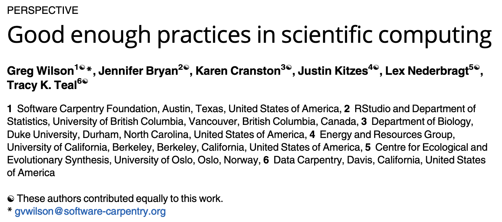
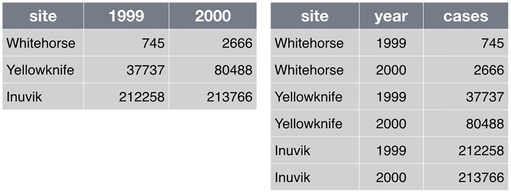

for ITEM in ${DIR}/*
do
the_thing -f ${PARAM1} -n ${PARAM2} ${ITEM}
doneGood Enough Practices
In this lesson we summarize the Good enough practices outlined by Greg Wilson, et al. for scientific computing.
Deciding on a place to start
Computational reproducibility is not “solved”, because it’s a difficult problem. So where should we start? We can start by working toward “good enough practices” (see the publication below), which map to our barriers.

Let’s revisit those barriers from before and see how these good enough practices map to them.
| Barrier | Good Enough Practice |
|---|---|
| Organization | Data management Software Project organization |
| Documentation | Tracking changes |
| Automation | Data management Software |
| Dissemination | Collaboration Manuscripts |
Below, we dig into each of these a bit further.
Data Management
In data management, we want to ask ourselves
Who will be using these data?
What would others need to rerun this from scratch?In answering these questions, the practices listed below become quite clear. The real trick is remembering to do it.
| Practice | Reason |
|---|---|
| Save raw data | Essential to rerun complete analysis |
| Save intermediate data | Allows for rerunnning portions of the analysis Allows for comparing discrepancies at each step |
| Backup data | Prevents data loss |
| Document all steps | Exact commands, parameters, input, and output are required for reproduction A shell script for each step, for example, would help achieve this Hand-written documentation may not fully reflect each step |
| Automate analysis | Manual data manipulation is more difficult to document faithfully |
| Use meaningful names | Variables, functions, and files should have meaningful, unique names |
| Open data practices | Provides others with data to validate your work, earning trust Placing in a reputable DOI-issuing repository improves reach of your work Allows others to build upon your work, opening the door for collaboration |
| Use “tidy” data | Simplifies the analysis |
Step documentation
To have a chance at reproducing your work, one needs the entire command as executed. Imagine we wanted to do the_thing to each item in a specific directory location, ${DIR}. What would someone need to run this effectively?
I need to know
- the value of the inputs:
${DIR} - the value of the parameters for the options/flags:
${PARAM1}and{$PARAM2} - any errors
We can do this in several ways (we can discuss later)
- Run each step in a script with information encoded
- Print the command to the screen
- Log the command with something like tee
- Other ways
An example of doing this with a bash script is shown below:
#!/usr/bin/env bash
DIR="/Users/csifuentes"
PARAM1="blah"
PARAM2=5
LOG="/Users/csifuentes/good_log_file_name.txt"
for ITEM in ${DIR}/*
do
COMMAND=$(the_thing -f ${PARAM1} -n ${PARAM2} ${ITEM})
echo ${COMMAND}
${COMMAND} 2>&1 | tee -a ${LOG}
doneAutomation
Automating code output (like above can help with documentation). Workflow managers, like Snakemake and Nextflow can allow one to log code and document at steps beyond this. We will talk about this in later sessions.
Use meaningful names
To make is easier for others (and yourself), care should be taken to use meaninful names for any of the files, variables, or functions used in your work.
| Names should | Not meaningful | More meaningful |
|---|---|---|
| Tell what they are/do, or reveal intention | sample1.fastq.gz |
Hs-sample1-treated-ATGATA.trim.fastq.gz |
| Be different enough to tell apart easily | multiOmicWithInput, multiOmicFromInput |
multiOmic_SampleA, multiOmic_SampleB |
| Easy to read/pronounc | sfns |
superFileNames |
| Be unique and searchable | d |
cell_type_holder |
| Not be a “keyword” used anywhere else by computers/languages | for, in, list |
cell_type |
Quick introduction to tidy data

Below are examples of the same data, represented in two different formats. On the left, we have what is commonly called “wide format” data. On the right, we have the same data in “tidy format”.

Quiz Time
1. Identifying tidy data
Q&A: Which of the following are tidy data?
State Year-Month High Temperature Low Temperature New Jersey 2020-01 41 23 New Jersey 2020-02 45 23 New Jersey 2020-03 55 32 Texas 2020-01 62 42 Texas 2020-02 65 45 Texas 2020-03 72 51 State Year Month High Temperature Low Temperature New Jersey 2020 01 41 23 New Jersey 2020 02 45 23 New Jersey 2020 03 55 32 Texas 2020 01 62 42 Texas 2020 02 65 45 Texas 2020 03 72 51 Both
Neither
Additional Reading
- Ten Simple Rules for Reproducible Computational Research
- Best Practices for Scientific Computing
- Good Enough Practices in Scientific Computing
- A Practical Introduction to Reproducible Computational Workflows Workshop by ISMB/EECB
- Reproducible Bioinformatics blog post by Dave Tang
Citations
- Ten simple rules for writing and sharing computational analyses in Jupyter Notebooks. Rule A, Birmingham A, Zuniga C, Altintas I, Huang SC, Knight R, Moshiri N, Nguyen MH, Rosenthal SB, Pérez F, Rose PW. PLoS Comput Biol. 2019 Jul 25;15(7):e1007007. doi: https://doi.org/10.1371/journal.pcbi.1007007
- Reproducibility, Research Objects, and Reality. Gable C. 2016 Nov 24. https://www.slideshare.net/carolegoble/reproducibility-research-objects-and-reality-leiden-2016
- Baker M. 1,500 scientists lift the lid on reproducibility. Nature. 2016 May 26;533(7604):452-4. doi: https://10.1038/533452a. PMID: 27225100.
- Yang-Min Kim, Jean-Baptiste Poline, Guillaume Dumas, Experimenting with reproducibility: a case study of robustness in bioinformatics, GigaScience, Volume 7, Issue 7, July 2018, giy077, https://doi.org/10.1093/gigascience/giy077